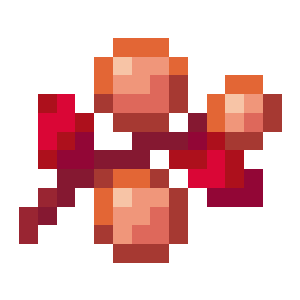
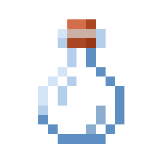
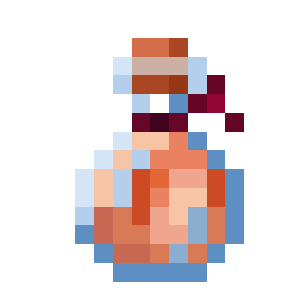
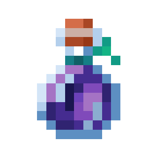
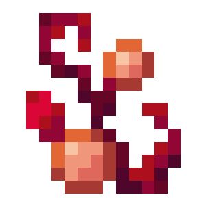
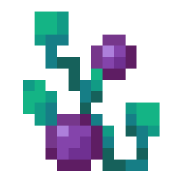

About
Cindersnap berries and frostbite berries are food items obtained from cindersnap berry bushes and frostbite berry bushes respectively. You can also use these berries to plant the bushes.
Cindersnap berry bushes and frostbite berry bushes are quick-growing plants that grow cindersnap berries and frostbite berries respectively. These bushes can be harvested to obtain more berries. Players and most mobs are slowed down and take constant damage while moving through these berry bushes.
Natural Generation
Cindersnap berry bushes and frostbite berry bushes can both be found in the warped and crimson forest biomes in the Nether dimension.
Config
Cindersnap bushes and berries: Set Enable Cindersnap Berries to Yes/true (default) to use them, or No/false to hide them.
Frostbite bushes and berries: Set Enable Frostbite Berries to Yes/true (default) to use them, or No/false to hide them.
Placing
Cindersnap berries and frostbite berries can be planted on both modded and vanilla netherrack, as well as, warped and crimson nylium. The associated tag for the netherrack blocks is c:netherracks.
Breaking
Both bushes can be mined instantly with any tool or by hand. A mature cindersnap berry bush or frostbite berry bush yields 2–3 berries. On its third growth stage, the bush yields 1–2 berries. Each level of Fortune can increase the amount of drops by 1.
Harvesting
Berries can be collected from a berry bush by pressing the use control on it, yielding 1–2 appropriate berries in its third growth stage, and 2–3 berries in its final growth stage. After dropping the berries on the ground, the berry bush reverts to its second growth stage.
Crafting Recipes
Cindersnap Berry Juice




Frostbite Berry Juice


Crimson Forage Mix


Warped Forage Mix


Nether Berries
| Bush | |
|---|---|
| Tool | Any tool |
| Blast Resistance | 0 |
| Hardness | 0 |
| Luminous | Cindersnap: 8 Frostbite: 5 |
| Transparent | Yes |
| Catches fire from lava | No |
| Berry | |
| Consumption Time | 32 game ticks (1.6 seconds) |
| Renewable | Yes (Berry Bushes) |
| Stackable | Yes (64) |
| Hunger | 1 ½ drumsticks |
| Saturation | 1.2 |
| Always consumable | No |